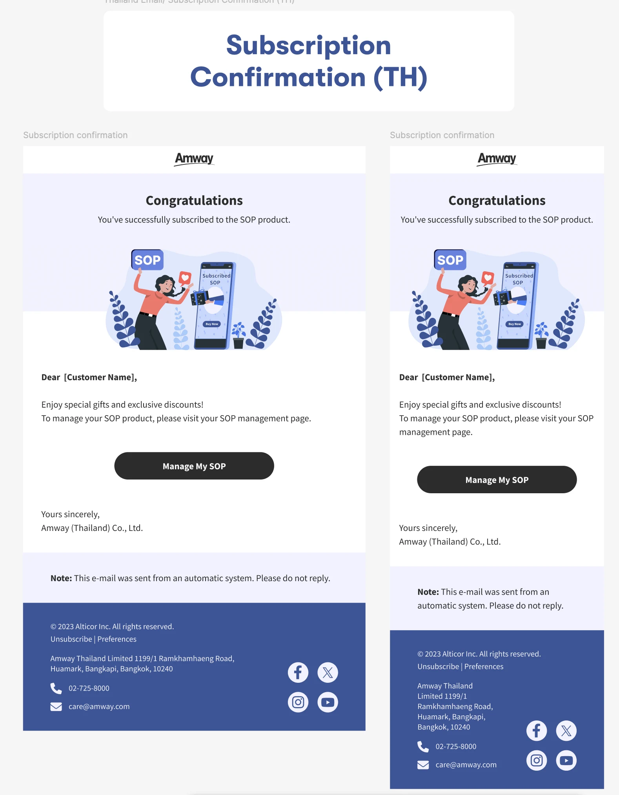

Subscription confirmed
A celebratory illustration and Manage My SOP action.
NEXTGEN COMMERCE · THAILAND · GLOBAL COLLABORATION
Transactional emails for desktop and mobile, shaped with the Global NextGen team for Thailand.

01 / CONTEXT
I collaborated with the Global NextGen team to define email layout dimensions and typography for Thailand, designed desktop and mobile views, and created illustrations for ordering and subscription scenarios. Each email needed to communicate its status and give customers a clear next step.
02 / GLOBAL COLLABORATION
Work with the global team on layout dimensions, text hierarchy, image proportions and spacing. Consider font selection, text size, line spacing and wrapping for Thailand’s content while keeping the shared visual direction consistent.
The supplied designs are labelled TH and show English sample copy. They illustrate layout intent; final Thai typography specifications are not shown here.
03 / RESPONSIVE DESIGN

Preserve the status heading, illustration, customer message and primary action across wider and narrower layouts. The mobile view allows longer copy and footer information to wrap while keeping the next action prominent.
04 / SCENARIO COVERAGE
A celebratory illustration and Manage My SOP action.
A cancellation scene and access to SOP management.
A warning illustration and Complete Your Payment Now action.
A follow-up message and payment action.
A renewal illustration and Track Order Status action.
05 / DESIGN SYSTEM
A consistent logo header, status heading, illustration area, greeting, body copy, CTA, system note and contact footer connect the email family. Scenario-specific artwork changes the meaning while retaining a coherent visual language.
06 / DELIVERABLES
Desktop and mobile layouts, scenario-specific illustrations, and collaboration on Thailand layout and typography requirements. The supplied overview verifies five paired subscription and payment scenarios.
These artifacts demonstrate design intent. Email-client implementation testing and conversion metrics are not asserted.